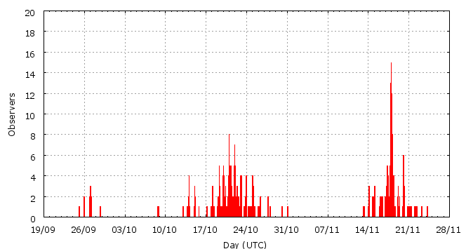

This page shows automated results of the Southern-Taurids 2009, based on visual observations by volunteers astronomers collected through the report form of the International Meteor Organization (IMO). The information on this page is generated fully automatically; for scientific use please refer to manual analyses published in scientific journals (such as WGN). Send your feedback regarding this page to Geert Barentsen.
Page contents:
Page generated: 2010 April 19 at 12:55 UTC.
ZHRmax = 6 based on 409 reported Southern-Taurids, assuming population index r = 2.3.
ZHR (Zenithal Hourly Rate) is the number of meteors an observer would see under a dark sky with the radiant of the shower in zenith.

| Time (UTC) | Solarlon | nINT | nSTA | ZHR | |
|---|---|---|---|---|---|
| 2009-09-26 11:23 | 183.380 | 14 | 10 | 2 | ±1 |
| 2009-09-27 19:29 | 184.692 | 5 | 4 | 2 | ±1 |
| 2009-10-14 02:47 | 200.762 | 20 | 13 | 2 | ±1 |
| 2009-10-15 02:51 | 201.756 | 5 | 3 | 2 | ±1 |
| 2009-10-18 03:40 | 204.766 | 43 | 20 | 2 | ±0 |
| 2009-10-19 16:38 | 206.297 | 32 | 30 | 3 | ±1 |
| 2009-10-20 10:26 | 207.034 | 49 | 30 | 2 | ±0 |
| 2009-10-21 06:36 | 207.870 | 68 | 30 | 2 | ±0 |
| 2009-10-22 01:30 | 208.653 | 39 | 31 | 3 | ±1 |
| 2009-10-22 18:16 | 209.349 | 48 | 31 | 2 | ±0 |
| 2009-10-24 04:11 | 210.756 | 38 | 25 | 3 | ±1 |
| 2009-10-25 13:35 | 212.143 | 26 | 16 | 2 | ±0 |
| 2009-10-27 19:34 | 214.386 | 7 | 5 | 2 | ±1 |
| 2009-10-30 15:34 | 217.216 | 4 | 9 | 6 | ±2 |
| 2009-11-14 11:40 | 232.100 | 23 | 29 | 3 | ±1 |
| 2009-11-17 05:04 | 234.846 | 110 | 30 | 2 | ±0 |
| 2009-11-17 21:57 | 235.556 | 102 | 30 | 2 | ±0 |
| 2009-11-18 04:17 | 235.821 | 154 | 30 | 2 | ±0 |
| 2009-11-19 23:04 | 237.621 | 41 | 16 | 1 | ±0 |
| 2009-11-21 23:15 | 239.648 | 11 | 9 | 3 | ±1 |
| 2009-11-23 21:06 | 241.579 | 3 | 8 | 6 | ±2 |
Time is the middle of the interval in Universal Time (UTC), Solarlon is the position of the earth relative to the sun (equinox J2000.0), nINT is the number of reported observing periods and nSTA is the reported number of Southern-Taurids.
ZHR = (1 + sum nSTA) / sum(Teff/C) where Teff is the effective observing time and C is the total correction for limiting magnitude, clouds and zenith correction 1/sin(hR).
Data has been received from 63 observers in 24 countries. Thank you for your efforts!
Note: click on the map for an interactive version.

| Observer | Country | Teff | nSTA |
|---|---|---|---|
| Salvador Aguirre | Mexico | 20.26h | 10 |
| Plamena Alexandrova | Bulgaria | 10.45h | 7 |
| Jure Atanackov | Slovenia | 2.92h | 4 |
| Pierre Bader | Germany | 13.60h | 15 |
| Gennadij Bugarevych | Belarus | 4.23h | 5 |
| Yi Cao | China | 1.60h | 8 |
| Simiao Cheng | China | 6.69h | 4 |
| Filip Colakovic | Serbia | 0.83h | 1 |
| Paul Craft | Australia | 5.47h | 10 |
| Tibor Csorgei | Slovakia | 1.50h | 2 |
| Mark Davis | United States | 5.67h | 5 |
| Mayuresh Desai | India | 11.84h | 8 |
| Sietse Dijkstra | Netherlands | 9.62h | 4 |
| Todor Dimitrov | Bulgaria | 3.71h | 4 |
| Plamena Enikova | Bulgaria | 2.37h | 2 |
| Tomasz Fajfer | Poland | 3.00h | 8 |
| Christoph Gerber | Germany | 9.36h | 10 |
| William Godley | United States | 6.00h | 5 |
| Michal Goraus | Poland | 2.00h | 4 |
| Daniel Gruen | Germany | 0.80h | 1 |
| Wayne T. Hally | United States | 16.78h | 10 |
| Vilem Heblik | Czech Republic | 3.00h | 5 |
| Ken Hodonsky | United States | 6.22h | 2 |
| Jeremy Jefferis | United States | 1.72h | 1 |
| Carl Johannink | Netherlands | 8.57h | 10 |
| Javor Kac | Slovenia | 17.17h | 19 |
| Lance Kelly | Australia | 2.00h | 4 |
| Gyula Kiss | Hungary | 7.00h | 6 |
| Katja Koleva | Bulgaria | 5.23h | 14 |
| Jens Lacorne | France | 2.18h | 0 |
| Peter Van Leuteren | Netherlands | 12.53h | 14 |
| Mike Linnolt | United States | 3.24h | 3 |
| Yanzhe Liu | United States | 0.92h | 1 |
| Tomasz Lojek | Poland | 11.40h | 12 |
| Jer Nan Lou | Taiwan | 2.43h | 2 |
| Douglas Love | United States | 0.83h | 2 |
| Robert Lunsford | United States | 9.67h | 13 |
| Adam Marsh | Australia | 6.66h | 8 |
| Grigoris Maravelias | Greece | 13.06h | 7 |
| Pierre Martin | Canada | 6.48h | 4 |
| Mikhail Maslov | Russia | 3.84h | 1 |
| Koen Miskotte | Netherlands | 19.67h | 17 |
| Sven Nather | Germany | 14.22h | 10 |
| Filip ?olakovi? | Serbia | 0.83h | 1 |
| Du?an Pavlovi? | Serbia | 0.66h | 1 |
| Rok Pucer | Slovenia | 4.26h | 3 |
| Jurgen Rendtel | Germany | 33.06h | 49 |
| Alex Scholten | unknown | 1.90h | 2 |
| Rene Scurbecq | Belgium | 0.65h | 0 |
| Rohan Shewale | India | 7.16h | 7 |
| Ulrich Sperberg | Germany | 1.59h | 0 |
| Wesley Stone | United States | 3.92h | 5 |
| Pavel Svozil | Czech Republic | 0.50h | 1 |
| Richard Taibi | United States | 3.68h | 6 |
| Michel Vandeputte | Belgium | 13.62h | 4 |
| Josep Trigo Rodriguez | Spain | 0.98h | 1 |
| Pawel Trybus | Poland | 1.00h | 1 |
| Shigeo Uchiyama | Japan | 4.00h | 3 |
| Michel Vandeputte | Belgium | 24.17h | 15 |
| Valentin Velkov | Bulgaria | 10.53h | 16 |
| William Watson | United States | 15.98h | 13 |
| Thomas Weiland | Austria | 10.55h | 8 |
| Weizhou Zeng | China | 2.03h | 1 |
Create your own analysis!
Rate intervals: sta2009_rate.csv (CSV-format).
Magnitude distributions: sta2009_magn.csv (CSV-format).
The information on this page may be distributed freely provided credit is given to the International Meteor Organization (IMO) and, when possible, to the individual observers.
The computer facilities to generate this page are provided by the Urania Public Observatory in Belgium and Armagh Observatory in Northern Ireland.